52.1.2. Defining DOE Variables
52.1.3. Failed DOE variable definition
52.1.6.1 Latin Hypercube Sampling
52.1.6.2. Full Factorial Sampling
52.1.6.3. Taguchi (Fractional Factorial) Sampling
52.1.6.4. User defined Sampling
52.1.7. Defining Case variables
52.1.8. Deleting Case variable
52.1.10. Case definition table
52.1.11. Defining DOE output operation
52.1.11.1. Operation selection
Local min/max Value (Summary min/max (One step))
State variable in regions (State Variable min/max (One step))
Summary plot (all steps from selected operation)
SV on all nodes/elements (Location specific (One step))
52.1.11.3. Define Variable constraints
52.1.11.4. Define Fill constraints
52.1.11.5. Global Min/Max (All steps)
52.1.11.7. Database Management
User must have nominal setup to which DOE Study can be added. DOE Study can be added either before completion of nominal simulation or without completion of nominal simulation from V12 while in previous versions DOE Study can be added only after completion
of the nominal simulation. User can add DOE operation using Add DOE Study option from  (Add new study) button as shown in Fig. 52.1.1.
(Add new study) button as shown in Fig. 52.1.1.
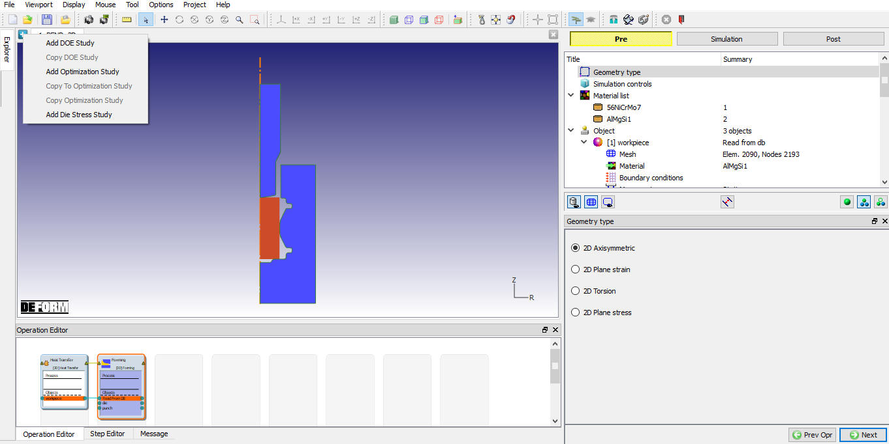
Adding DOE Study Project
After adding the DOE study, DOE study project gets added next to the nominal project tab. In DOE Study tab operation editor, we can observe nominal setup along with DOE output operation. In DOE output operation we can add state variables for each
operation whose output can be observed in DOE post as shown in Fig. 52.1.2.
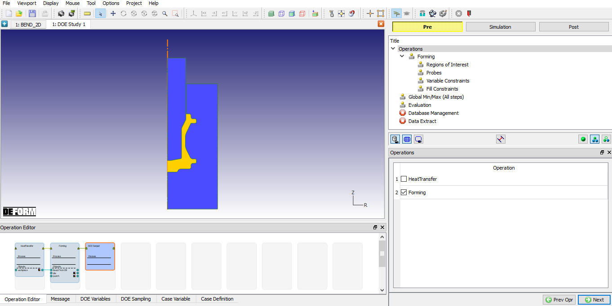
DOE Project with DOE output operation
The material properties, object data, inter-object data and process variables can be added as DOE variables from property editor window. In Property editor window, if a variable field has green ribbon around the fields (See Fig. 52.1.3) then that variable can be added as DOE or Case variable. Constants, functions and geometry data definition types can also be added as DOE variables. The DOE variable can be continuous or discrete.
Continuous Input Variable : Continuous variables can be added as normal DOE variable by defining the range of study variable’s fluctuation/uncertainty as upper and lower bound values along with number of samples required within the
range. Example object temperature etc.
Discrete Input Variable : Variables which are not continuous can be defined as discrete DOE variables by defining number of samples and sample values.
Steps to define DOE Variable:
The steps to define the DOE variables are as follows,
Before adding the DOE variable user needs to select the operation for which DOE variable needs to be defined. (See Fig. 52.1.2)
Identify the variables to add as DOE variables, fields which are having green ribbon around them in property editor window can only be selected. Right click in green ribbon region and select Add DOE variable option as shown in Fig. 52.1.3.
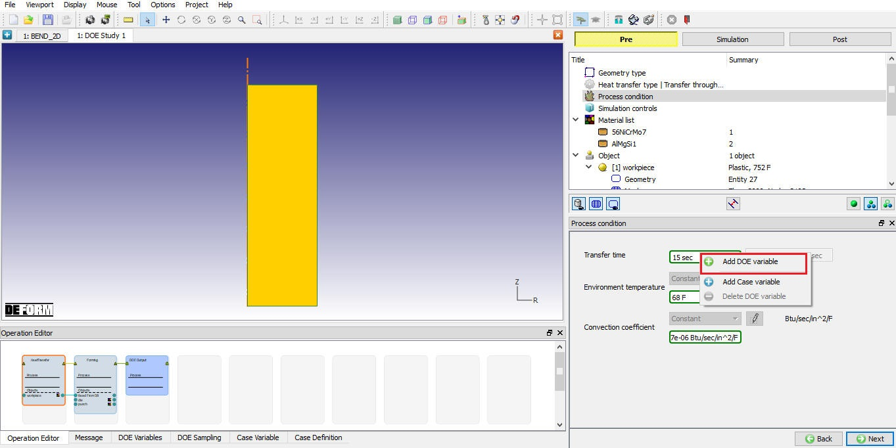
Add DOE variable by right click on green ribbon of DOE variable field
In DOE variable definition window, if DOE variable is continuous then define study variable range as upper and lower bound values as shown in Fig. 52.1.4. else if data is not continuous, define the discrete samples by checking the Discrete checkbox and selecting number of samples to input as shown in Fig. 52.1.5. The default number of samples are three, user can increase the number of samples as required.
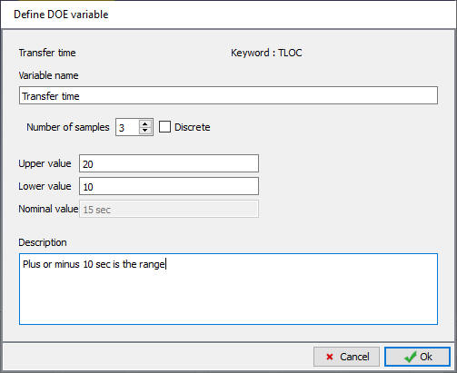
Continuous DOE variable definition window for constant value data
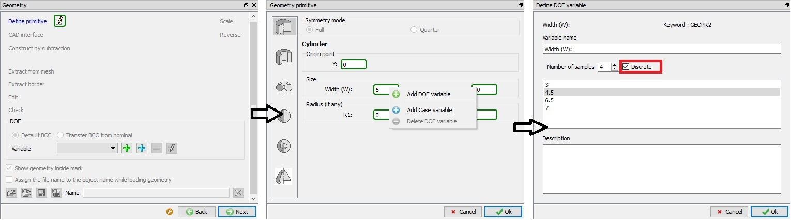
Discrete DOE variable definition window for constant value data
Enter description for the DOE variable if necessary, as shown in Fig. 52.1.4. Some useful note about the selection and variation defined can be entered here. Click  to close the definition.
to close the definition.
Confirm the DOE variable definition by observing the green fill around the variable field after definition. The field filled with green color indicates that it has been added as DOE variable. Right click in the green colored area will display the defined upper and lower bound values (See Fig. 52.1.6. and Fig. 52.1.7.).
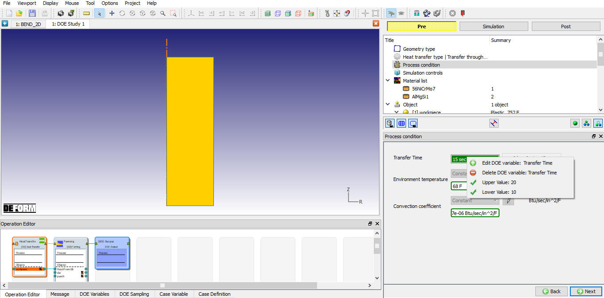
Continuous DOE variable definition indicators
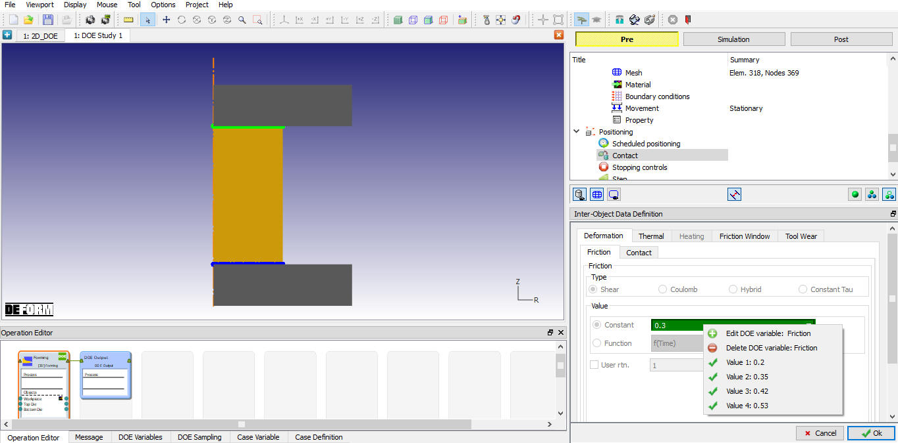
Discrete DOE variable definition indicators
In operation editor green color DOE text can be observed on operations top right end indicating operations with DOE variables are defined as shown in Fig. 52.1.6. and Fig. 52.1.7. DOE variable name can be edited from “DOE Variables” tab.
The examples mentioned below demonstrates adding different input data types as DOE variable.
Example1: Material property like flow stress, which is function of strain, strain rate and temperature can be added as DOE variable by offsetting or scaling the function curve.
Files required to exercise this example are available at installation path 2D\LABS\BEND_2D, open the BEND_2D.moprj file from  , simulate the Nominal run add DOE study
and follow instructions as mentioned below.
, simulate the Nominal run add DOE study
and follow instructions as mentioned below.
First add the DOE variable by navigating to material page and using right click option on Flow stress  (Define) button as shown in
Fig. 52.1.8.
(Define) button as shown in
Fig. 52.1.8.
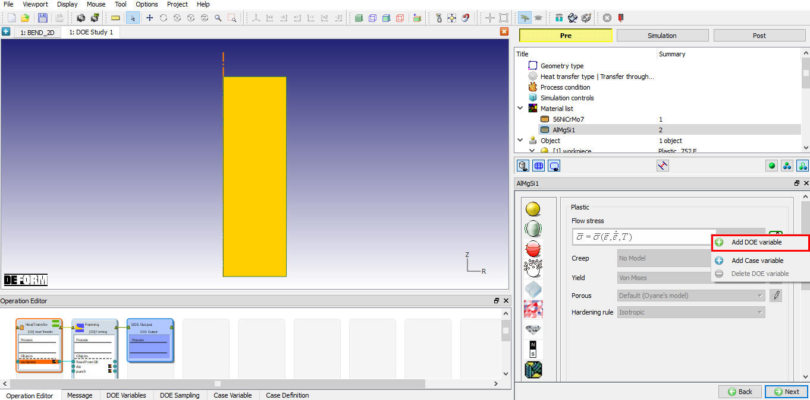
Add function data as DOE variable
In DOE definition window, add description about definition and click on
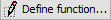
button to define continuous DOE definition upper and lower bound values as shown in Fig. 52.1.9 or if you need to experiment with specific flow stress data of different materials, select discrete DOE definition by checking “Discrete” checkbox and select as many samples as needed to input as shown in Fig. 52.1.10. For Discrete samples definition, click on the
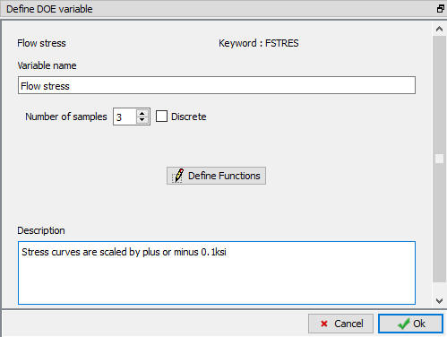
Continuous DOE variable definition window for function value data Flow stress
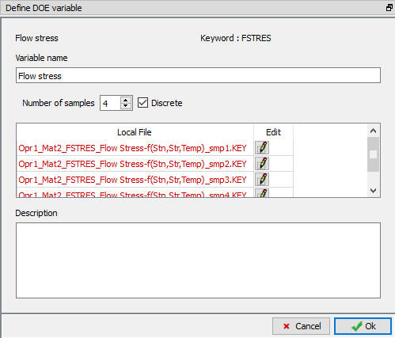
Discrete DOE variable definition window for function value data Flow stress
Function definition window will open with nominal values when we click on button for Continuous DOE or  button
for discrete DOE definition as shown in Fig. 52.1.11. For function data of continuous
DOE variable definition, user can select definition type such as Nominal, Upper or Lower from DOE field pull down menu. User can only change the Upper and Lower bound curves using scale, offset options or by editing values or by dragging the curve
or point.
button
for discrete DOE definition as shown in Fig. 52.1.11. For function data of continuous
DOE variable definition, user can select definition type such as Nominal, Upper or Lower from DOE field pull down menu. User can only change the Upper and Lower bound curves using scale, offset options or by editing values or by dragging the curve
or point.
For function data of discrete DOE variable, user can define the sample value using scale, offset options or by editing values or importing the flow stress curves DAT file as shown in Fig. 52.1.12.
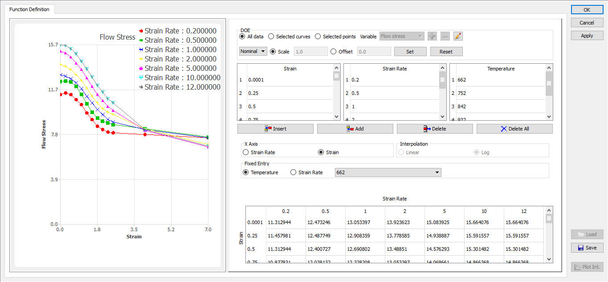
Nominal function data curves of Flow Stress for continuous DOE
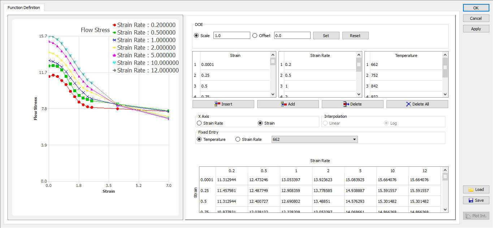
Nominal function data curves of Flow Stress for Discrete DOE
For continuous DOE definition, select the DOE type as Upper to define the upper bound values by using scale option. In this example, we will define it by scaling the function data. Select “Scale” radio button and enter 1.1 to scale up nominal
stress curves by 0.1 Ksi. Click on “Set” to scale the values. See Fig. 52.1.13. for scaled
upper bound curves.
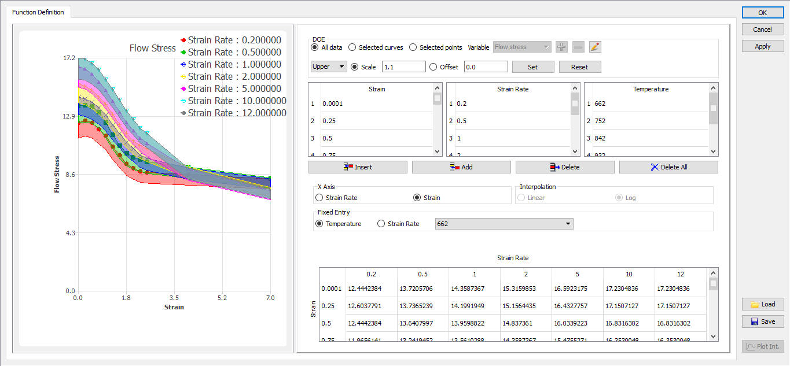
Upper bound scaled up function curves for continuous DOE
For continuous DOE definition, select the DOE type as Lower to define the lower bound values by using scale option. Select “Scale” radio button and enter 0.9 to scale down nominal stress curves by 0.1 Ksi. Click on “Set” to scale the values. See
Fig. 52.1.14. for scaled down lower bound curves.
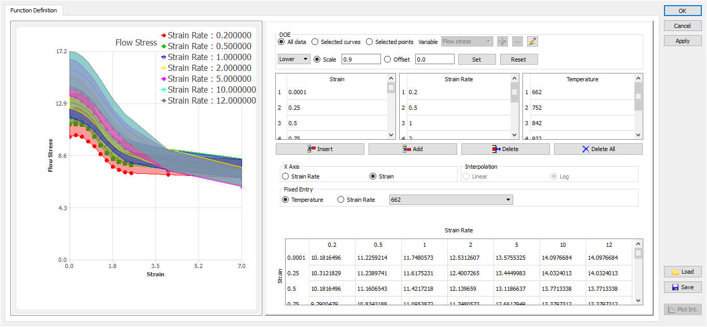
Lower bound scaled down function curves for continuous DOE
Confirm the definition by observing the green fill in define button and green color DOE text in operation editor on operation right top corner. Right click in the green colored area and confirm the definition of upper and lower bound values. (See
Fig. 52.1.15.).
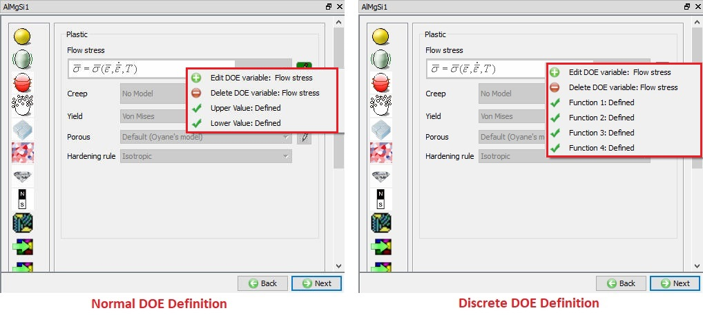
DOE variable right click options
Example2: Material property like flow stress, which is function of strain, strain rate and temperature can be added as DOE variable by scaling the function curve or defining the different
values for each curve. Files required to exercise this example are available at installation path 2D\LABS\BEND_2D, open the BEND_2D.moprj file from  simulate the Nominal
run add DOE study and follow instructions as mentioned below.
simulate the Nominal
run add DOE study and follow instructions as mentioned below.
First add the DOE variable by navigating to material page and using right click option on Flow stress  (Define) button as shown in Fig. 52.1.8. In DOE definition window, add description about definition and click on button to define continuous DOE definition’s upper and lower bound values
as shown in Fig. 52.1. 9.
(Define) button as shown in Fig. 52.1.8. In DOE definition window, add description about definition and click on button to define continuous DOE definition’s upper and lower bound values
as shown in Fig. 52.1. 9.
Function definition window will open with nominal values when we click on button for Continuous DOE as shown in Fig. 52.1.16. For function data of continuous DOE variable definition, user can select definition type such as Nominal, Upper or Lower from DOE field pull down menu. User can only change the Upper and Lower bound curves using different options like scale, offset
options, editing values within table, dragging the curve or point. We can assign variables to All data, Selected curve or Selected point as shown in the Fig. 52.1.16. For this example, we will use selected curve option to define two different variables for Strain rate curve of 0.2 and 0.5
Nominal function data curves of Flow Stress for continuous DOE
We can define the variables individually for the selected curve or selected points. We will select the “Selected curves” radio button for this example. We can now observe that the variable pull down menu will be activated, click on  button to add a new variable. We can click on button to edit the variable name and its samples (See Fig. 52.1.17.).
We can use button to delete the selected variable. We will define the variable name as “Flow stress 2”.
button to add a new variable. We can click on button to edit the variable name and its samples (See Fig. 52.1.17.).
We can use button to delete the selected variable. We will define the variable name as “Flow stress 2”.
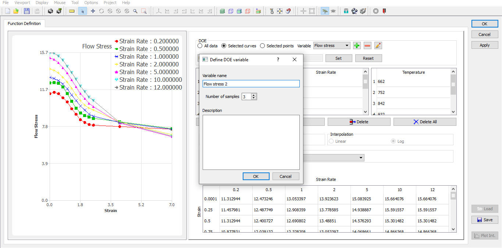
Adding the DOE Variable data
Select any cell under the 0.2 strain rate column and right click on the cell as shown in Fig. 52.1.18. Using the “Assign to variable” option select “Flow stress”. Similarly select any cell under 0.5 strain rate column and right click on the cell as shown in Fig. 52.1.19. Using the “Assign to variable” option select “Flow stress 2”. We can use the “Remove from DOE variable” from the right click options to delete the assigned variable.
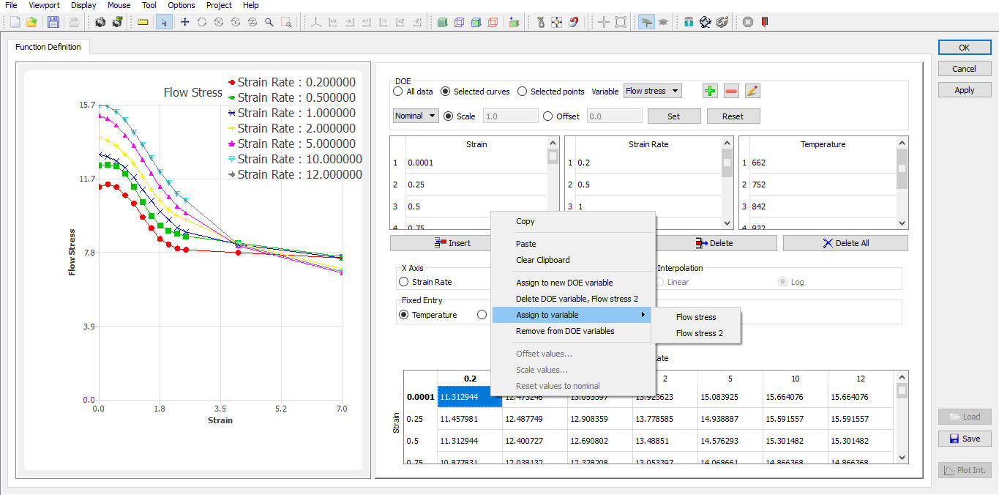
Assigning the “Flow stress” DOE Variable to the selected curve
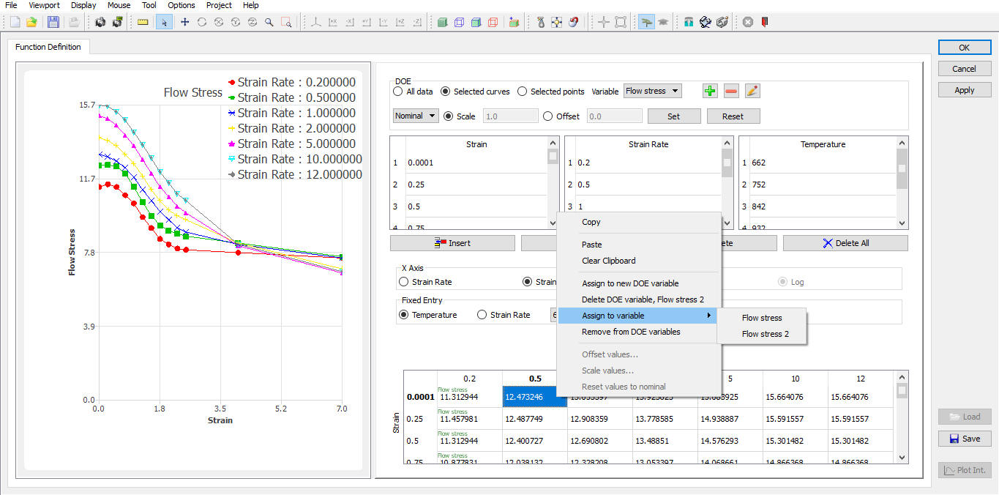
Assigning the “Flow stress 2” DOE Variable to the selected curve
Note: If we want to assign the variable for any one point, we must select the “Selected points” radio buttons in the DOE. The variable will be assigned for the selected point as shown in the Fig. 52.1.20.
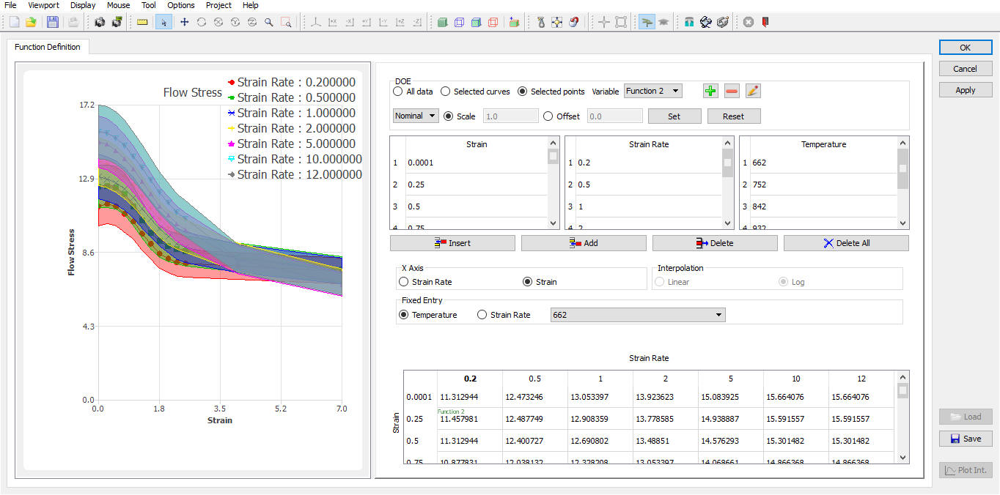
Variable is assigned for the selected point
After adding the variable, we will define the Upper and Lower DOE values for the curves by dragging the selected curve using the mouse pointer. Select the Upper option for DOE, using the mouse pointer select the 0.2 and 0.5 curves and drag the curves upwards to define the Upper DOE (See Fig. 52.1.21.). Similarly define the Lower DOE by dragging the 0.2 and 0.5 curves downwards (See Fig. 52.1.22.).
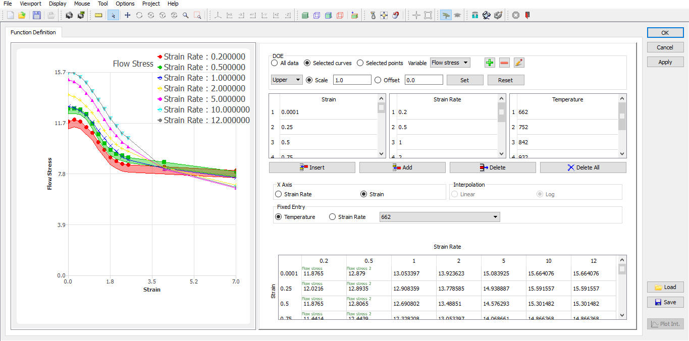
Defining the upper DOE by dragging the 0.2 and 0.5 strain rate curves
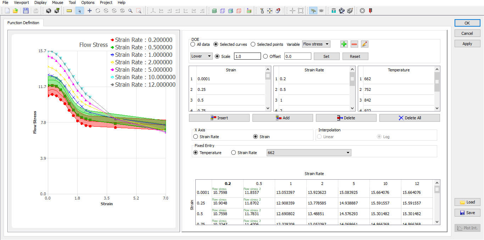
Defining the lower DOE by dragging the 0.2 and 0.5 strain rate curves
Confirm the definition by observing the green fill in define button and green color DOE text in operation editor on operation right top corner. Right click in the green colored area and confirm the definition of upper and lower bound values. (See Fig. 52.1.15.). If we see the DOE sampling tab, we will be having the two different flow stress DOE variables.
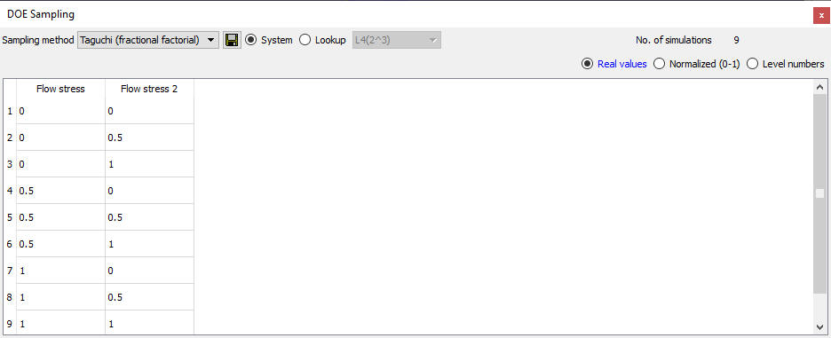
DOE Sampling page with different flow stress variables data of same material
Example3: Object geometry can be added as normal DOE variable using 2d geometry editor or using discrete DOE definition by directly importing different geometry designs. Continuous DOE definition is done by varying the nominal geometry
values to define the upper and lower bound geometries. Files required to exercise this example are available at installation path 2D\LABS\BEND_2D. Open the BEND_2D.moprj file from then simulate the Nominal run and add DOE study. Follow below description to complete DOE definition.
then simulate the Nominal run and add DOE study. Follow below description to complete DOE definition.
To add the punch geometry as DOE variable, navigate to geometry page of punch in Forming operation and click on  button next to variable field as shown in Fig. 52.1.24.
button next to variable field as shown in Fig. 52.1.24.
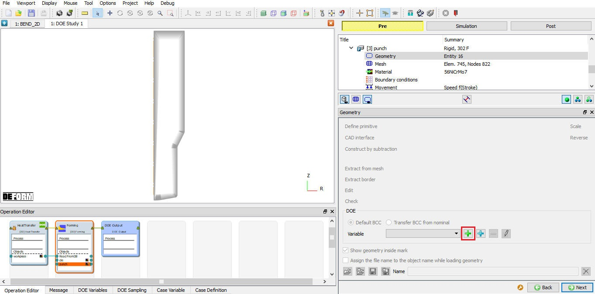
Geometry variation adding as DOE variable
Add description and click on
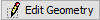
button (See Fig. 52.1.25.) to define continuous DOE definition by defining upper and lower bound geometry profiles and system will morph the geometry samples between these bounds.
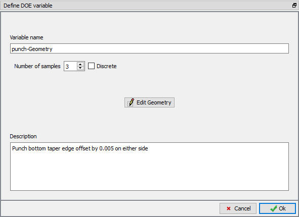
Geometry DOE variable definition window for normal definition
The edit geometry window will open with default selection of DOE geometry lower limit and morph method as XYR as shown in Fig. 52.1.26.
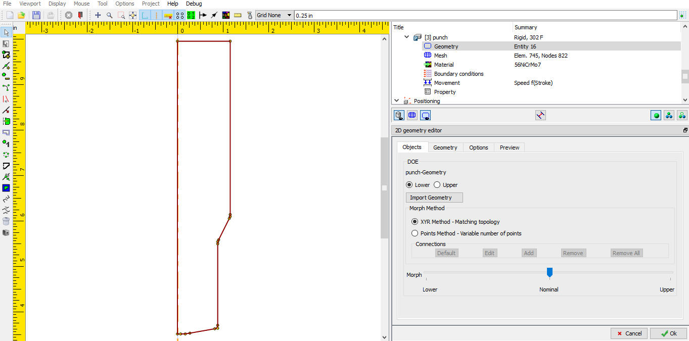
Geometry DOE variable edit window for normal definition
Select offset icon and zoom in to the punch bottom surface and select the tapered bottom edge that needs to be offset by into the nominal geometry then enter -0.005in as shown in Fig. 52.1.27.
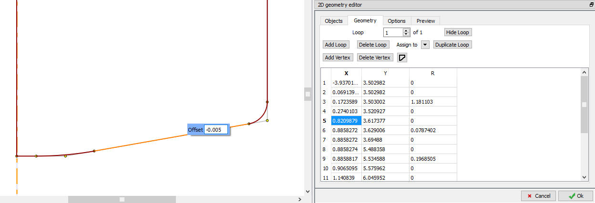
Lower edge of the punch is selected to offset in by 0.005
Click on geometry tab to see the coordinates, as the bottom left curve radius is not smooth at the right end change its radius (in geometry table 3rd point) to 0.85 from 1.18 as shown in Fig. 52.1.28.
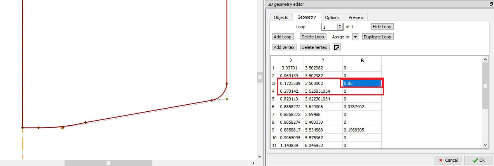
Lower bound Geometry
Click on objects tab and select the “Upper” under DOE type to define the upper bound geometry as shown in Fig. 52.1.29.
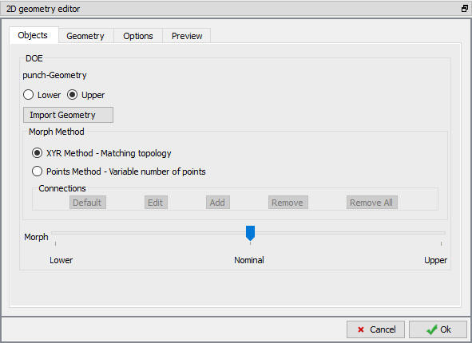
Selecting the upper bound geometry to edit
Select the same bottom lower edge and offset by 0.005 out of the nominal geometry as shown in Fig. 52.1.30. and Fig. 52.1.31. Click on geometry tab to see the co-ordinates variation.
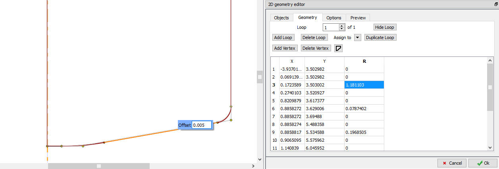
Upper edge of the punch is selected to offset out by 0.005
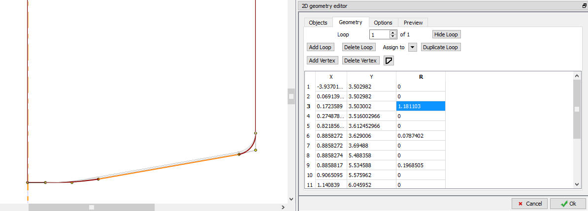
Upper bound Geometry
Click on objects tab and use the morph sliding bar to confirm the geometry variation between upper and lower bound is smooth as shown in Fig. 52.1.32.
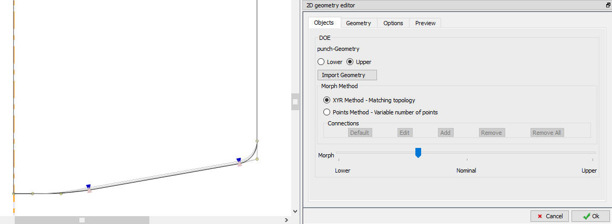
Morph geometry between lower and nominal range values
When user wants to use the multiple geometry designs instead of using morphing method or in cases where morphing is difficult/unreliable discrete DOE definition can be used. Discrete DOE definition is done by directly importing geometry file like
IGS or DXF or GEO (See Fig. 52.1.33.) or even from KEY or DB file (by selecting the
step and object for KEY and DB file, See Fig. 52.1.34. for number of samples. User needs
to click on  button under browse column next to the sample to import the respective sample geometry file.
button under browse column next to the sample to import the respective sample geometry file.
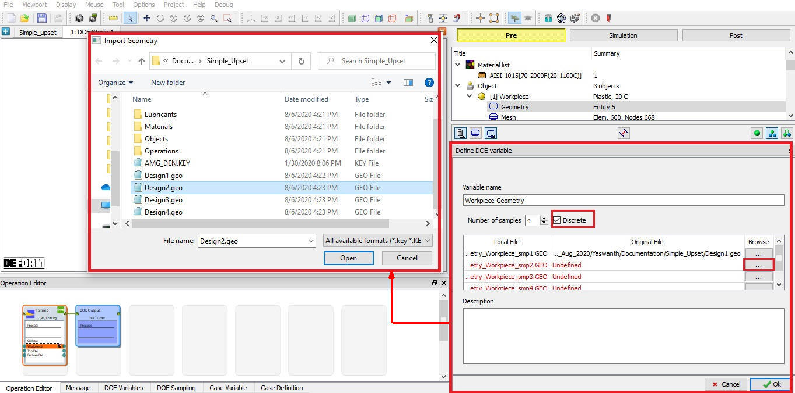
Geometry variable discrete DOE definition for Geometry files
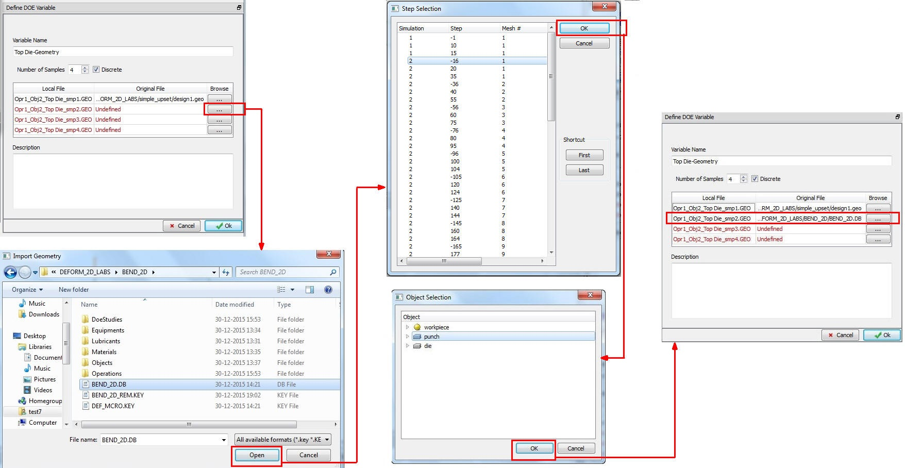
Geometry variable discrete DOE definition for KEY and DB
Click  to close the definition and confirm the definition by observing the green fill around the variable field and green color DOE text in operation editor on operation right top
corner. Right click in the green colored area and confirm the definition of upper and lower bound values (See Fig. 52.1.35.).
If discrete method is used, then make sure all samples are indicated as “Defined”.
to close the definition and confirm the definition by observing the green fill around the variable field and green color DOE text in operation editor on operation right top
corner. Right click in the green colored area and confirm the definition of upper and lower bound values (See Fig. 52.1.35.).
If discrete method is used, then make sure all samples are indicated as “Defined”.
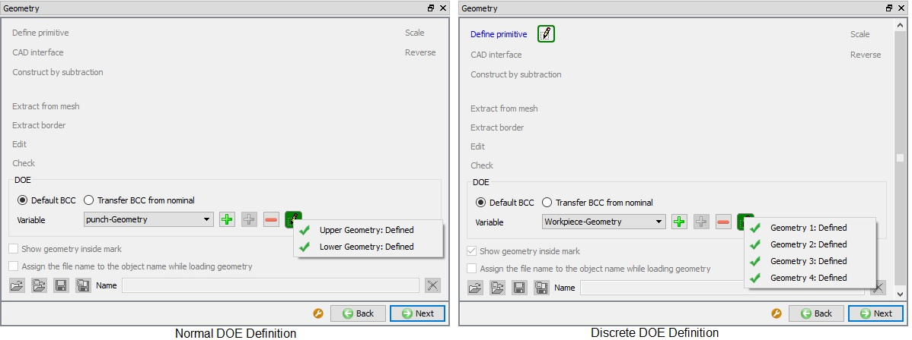
Geometry DOE variable definition confirmation for 2nd operation
In continuous DOE variable definition if upper or lower or both range values are not defined or in discrete DOE definition any discrete samples are not defined then such DOE variable will be highlighted with red color fill around the field or button as shown in Fig. 52.1.36. Then by right clicking on the field, missing data can be defined.
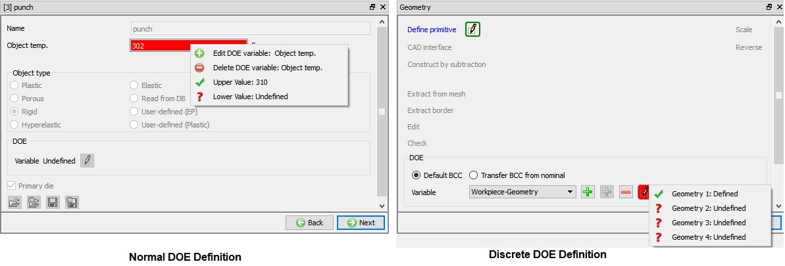
Failed DOE variable definition
Defined DOE variables will be highlighted by green color shading around DOE variables field (See Fig. 52.1.37.), right click on the defined DOE variable field gives an option to delete the added DOE variable. User can also delete the added DOE variables from DOE table using button or using right mouse button menu option on variables listed in study variable column. (See Fig. 52.1.38.).
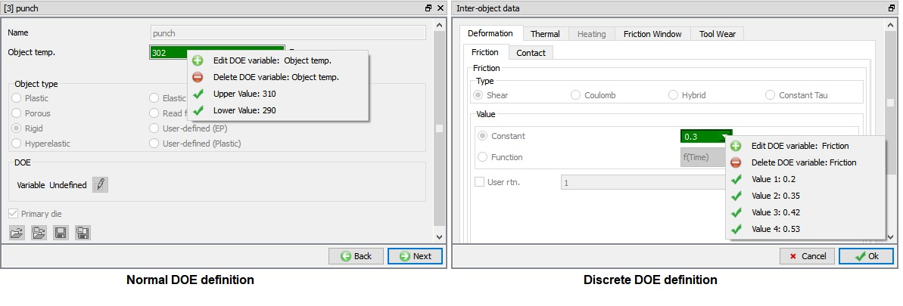
Delete DOE variable definition from property editor
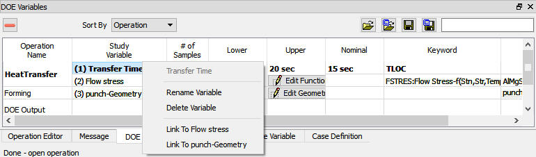
Delete DOE variable definition from DOE table
DOE table tabulates the details of DOE variables defined for each operation as shown in Fig. 52.1.39. DOE table includes the details of Operation Name, Study variable (Defined DOE variable) Name, Number of samples, Lower, Upper and Nominal values, Keyword and object or material to which it belongs. User can edit the defined Study variable name, # of samples, constant Lower and Upper bound values for continuous DOE definitions by double clicking on that cell. User can click on
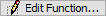
in table to edit function data of continuous DOE definition which will open the function DOE definition window. To edit the geometry user can click on in DOE table, which will open 2D geometry editor or 3D geo tool.
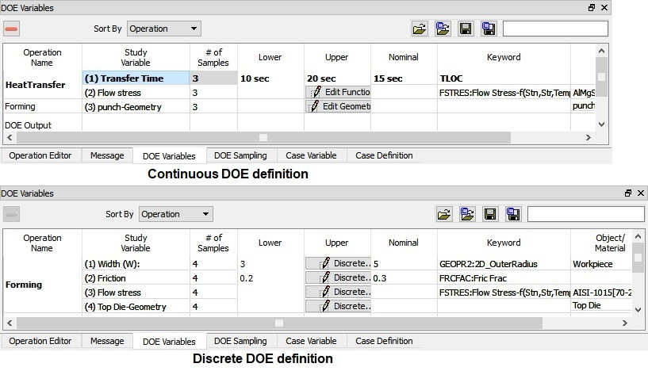
DOE table with added DOE study variables details
DOE table terminology:
Operation Name: Operation in which DOE Study variable is added.
Study Variable: Name of the Study variable added for DOE study, by default this name is defined by system based on variable selection and can be renamed by the user.
# of Samples: Number of study variable samples to prepare total DOE samplings to study. The number of samples will affect the sampling and the number of simulation studies to be carried over.
Lower: Lower bound value of the study variable in case of continuous DOE variables (for Continuous DOE definition).
Upper: Upper bound value of the study variable in case of continuous DOE variables (for Continuous DOE definition).
Nominal: Nominal value of the study variable in case of continuous DOE variables (for Continuous DOE definition), the values of DOE variables defined in nominal project are considered as nominal values.
Keyword: Keyword which define the added study variable.
Object/ Material: It displays the object name to which study variable belongs to or it displays the material name if it belongs to any material properties. In case of process data like heat transfer time system does not display any name.
Delete Study variable : User can select added study variable and delete it using this button.
Export DOE Table  : The DOE study variables definition can be saved to an XML file using this option.
: The DOE study variables definition can be saved to an XML file using this option.
Export DOE table to library  : This saves the DOE study variables definition to a XML file in user data library. In windows system with user name "user1"
the default library path will be "C:\Users\user1\Documents\userDataLib\DOE".
: This saves the DOE study variables definition to a XML file in user data library. In windows system with user name "user1"
the default library path will be "C:\Users\user1\Documents\userDataLib\DOE".
Import DOE Table  : Saved DOE study variable definitions XML file can be imported to redefine the same.
: Saved DOE study variable definitions XML file can be imported to redefine the same.
Import DOE Table from library  : Saved DOE study variable definitions XML file can be imported from user library to redefine the same.
: Saved DOE study variable definitions XML file can be imported from user library to redefine the same.
Sort by: Sort by is used to sort the DOE table display content by operation or by study variables definition order.
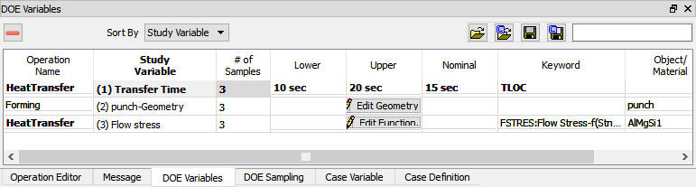
DOE table details sorted by study variable number
Link To: DOE Variables can be linked to each other from the right click menu of the selected variable as shown in the Fig. 52.1.41. If DOE variables behavior is similar, then those DOE variables can be linked so that they vary similarly and number of DOE variables for sampling can be reduced. When two variables are linked, in effect they act as single variable and variables for
DOE sampling are reduced.
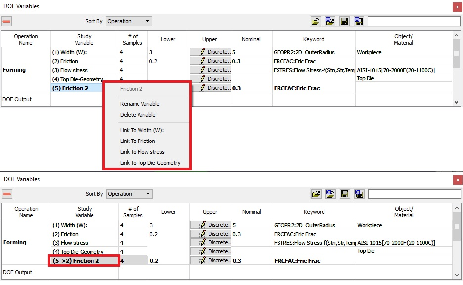
Linking the two different DOE Variables
DOE sampling tab is used to select total number of DOE studies to be simulated based on statistical sampling methods or user defined number of samples. Using DOE samplings user can control the number of simulations and sample value. The sampling methods available to distribute different study variables across DOE studies are Latin Hypercube, Full factorial, Taguchi and User-defined (See Fig. 52.1.42.). The DOE Study variables columns position can be changed by using the right click options on the columns (See Fig. 52.1.43.) to the required position in DOE sampling tab.
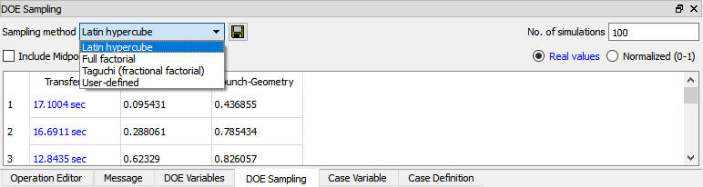
DOE sampling methods
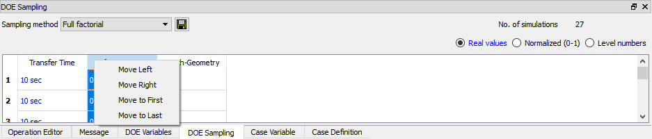
Moving the position of the selected variable in the DOE Sampling table
The four DOE sampling methods are,
Latin hypercube sampling (LHS) is a statistical method for generating a sample of reasonable collections of parameter values from a multidimensional distribution.
In the context of statistical sampling, a square grid containing sample positions is a Latin square, if (and only if) there is only one sample in each row and each column. A Latin hypercube is the generalization of this concept to an arbitrary number of dimensions, whereby each sample is the only one in each axis-aligned hyperplane containing it. Fig. 52.1.44. shows the Latin hypercube as the sampling method with 10 Number of DOE samples or simulations. User need to enter the number of simulations required then system automatically updates each sample study variable values accordingly.
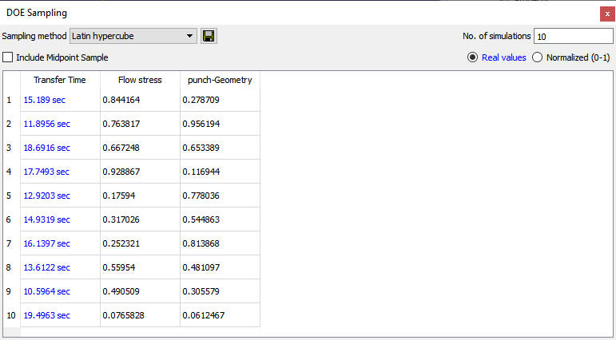
Latin Hypercube samples
A full factorial design contains all possible combinations of a set of DOE Study variables. This is the most fool proof design approach, but it is also the most time costly in experimental resources. In full factorial designs, you perform an experimental run at every combination of the factor levels (Study variable samples). The sample size is the product of the numbers of levels of the factors. For example, a DOE with a combination of two sample study variable, a three sample study variable and a four sample study variable has 2 x 3 x 4 = 24 DOE runs or DOE studies.
From Fig. 52.1.39., all the three variables are having three samples then the total DOE runs are 27 as shown in Fig. 52.1.45.
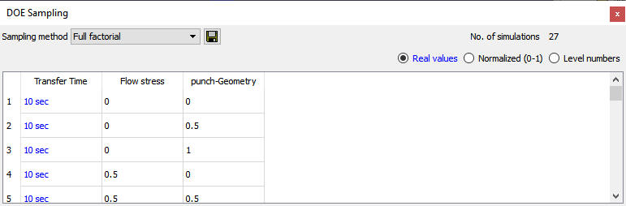
Full factorial samples
A Taguchi (fractional factorial) design contains a set of sampling matrices that test every pair of parameters rather than every possible combination. It uses fractional factorial sampling to minimize the number of experiments (runs). Lowest number of sampling levels will be placed in the first columns then followed by a higher number of sampling levels. The variables with expected linear response will be placed in the first columns (See below Fig. 52.1.46.).
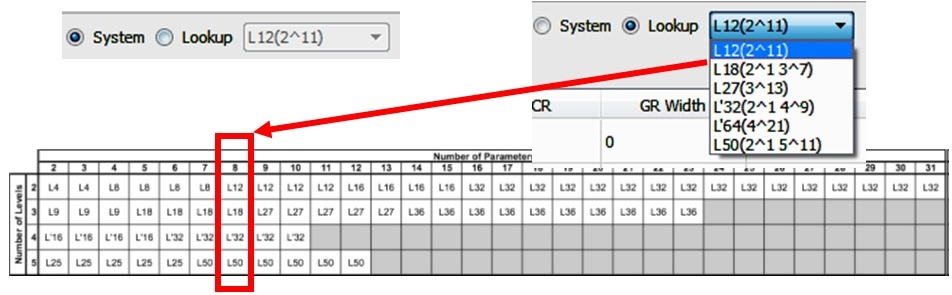
Taguchi sampling options
User can allow the system to choose the samples based on Taguchi method automatically using system option.
User can also use lookup option to select the level from the available options in pull down menu. The options in pull down menu are provided by system based on the number of samples and study variables.
Example of System and Lookup matrix sampling are shown in Fig. 52.1.47. for DOE sampling table.
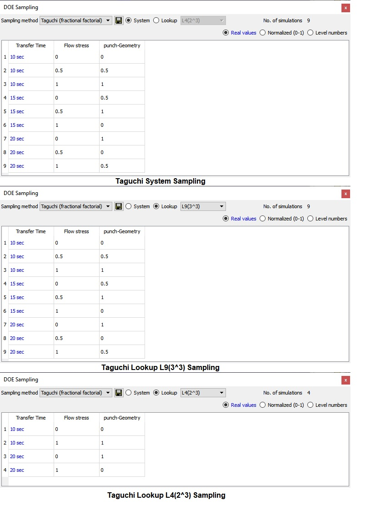
DOE sampling table for Taguchi sampling method
As the name indicates user need to enter the number of simulations or DOE samples and sample values must be entered for each DOE.
The case variable can be defined for all the fields having green ribbon around them (See Fig. 52.1.48.). Constants, functions and geometry data definition types can be added as case variables. The case variables can only be discrete. Once a case variable is defined then user can observe that the field will be filled with blue color.
Defining a case variable is similar to discrete DOE variable definition hence please refer Discrete Input variable to know about defining case variable definition. Below example demonstrates the case variable definition.
Example 1: Movement function data can be added as case variable. Files required to exercise this example are available at installation path 2D\LABS\BEND_2D. Open the BEND_2D.moprj file from  then simulate the Nominal run add DOE study. Follow instructions as mentioned below to define case variable. First add the case variable by navigating to Forming operation movement page and using right click option on
then simulate the Nominal run add DOE study. Follow instructions as mentioned below to define case variable. First add the case variable by navigating to Forming operation movement page and using right click option on
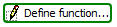
button as shown in Fig. 52.1.43.
Add function data as Case variable
When we click on “Add case variable “option we will get the Define DOE Variable window and we can observe that only discrete type input can be defined. Click on the  button for
the first sample as shown in the Fig. 52.1.49.
button for
the first sample as shown in the Fig. 52.1.49.
Case variable definition window for function type movement data
When we click on edit button for the sample one, we will get the function definition window as shown in the Fig. 52.1.50. Using the Scale option enter the value 1.1 and click on set button to scale the values. See the Fig. 52.1.51. for scaled values. Define sample 2 and 3 using similar method with scaling factors 0.9 and 1.15 respectively. Confirm the definition by observing the Blue fill in “Define function” button. Right click in the blue coloured area and confirm the definition of sample data.
Nominal function data
Scaled up function curves for case variable
After defining the data for all the samples
Right click options after defining the case variable
Defined case variables will be highlighted by blue color shading around variables field (See Fig. 52.1.54.), right click on the defined variable field gives an option to delete the added case variable. User can also delete the added case variables from “Case variables” table using button or right mouse button menu option on variables listed in study variable column (See Fig. 52.1.55.).
Deleting the Case variable
Deleting the case variable from case variable table
Case variable table tabulates the details of case variables defined for each operation as shown in Fig. 52.1.56. Case variable table includes the details of Operation Name, Study variable (defined case variable) Name, Number of samples, Lower, Upper and Nominal values, Keyword and object or material to which it belongs. User can edit the defined Study variable name and number of samples. For case variable definition only Study variable name can be edited directly in table while case variable values can be edited using in table in the respective variable row.
Case variable table
User can either use full factorial or user defined methods as sampling methods for case variables. (See Fig. 52.1.57.)
Case definition table
The two sampling methods are
1. Full factorial
2. User defined
Full factorial samples
User defined samples
The DOE output operation objective is to pre-define required state variables that need to be studied to automatically post-process multiple databases. User can also add Region of Interest, Probes, variable constraints, Fill constraints and Evaluation criteria along with state variables for automatic post-processing. Memory size for DOE study can be manged using “Database Management” options from DOE output operation since DOE study involves multiple simulations and may require large memory space.
DOE Study generates an SDB file at the end of DOE study for all the DOE outputs defined in the DOE output operation. User can modify the DOE output data even after completing the DOE study either from DOE output operation in DOE study or in DOE
post and extract the data.
Select the DOE output operation after defining DOE variables from operation editor to define variables and other settings for post-processing DOE studies as shown in Fig. 52.1.60.
DOE output for single operation
DOE output for multi operations
Operation selection page displays all the operations that are defined in the nominal setup and user can select any one operation (See Fig. 52.1.60.)
or multiple operations (See Fig. 52.1.61.) by selecting the respective check box and click  to define the outputs for the selected operations.
to define the outputs for the selected operations.
Once operations for which we are going to define DOE outputs are selected then they are listed in the tree as shown in Fig. 52.1.61. User can select the operation to defien the outputs, then user can observe output types in property editor window and user need to check the output types for that operation, the selected outputs are added to tree as shown in Fig. 52.1.62. The output types available are Single output, Transient output, Common mesh output (location dependent) and Special output types as shown in Fig. 52.1.62.
DOE outputs selection window
Defining Region of Interest:
A Region of Interest (ROI) is a region of an object that could be smaller or larger than the entire object. It is used to limit the study to what happens inside
the final shape of the part (i.e., machined shape or ship shape). It can be used to study an area to include or exclude forming feature/defect (end effects, under-fill or fold) and to determine success or failure for the process. (See Fig. 52.1.63.)
Under-fill and unwanted area example
Common mesh is one way of defining the ROI. In common mesh all the results of individual DOE's are interpolated onto a common mesh for the purpose of comparison and response surface generation. (See Fig. 52.1.64.)
Common mesh concept
To define the ROI region geometry first click on  (Add ROI) button (See Fig. 52.1.65.)
then click on
(Add ROI) button (See Fig. 52.1.65.)
then click on  to create ROI geometry using geometry editor.
to create ROI geometry using geometry editor.
ROI definition window
Create the ROI geometry using geometry editor as shown in Fig. 52.1.66.
Creating ROI using geometry editor
Click  to close the ROI geometry definition. Make sure that geometry orientation is inside the geometry by checking the Show geometry inside mark check box and observing the geometry
inside shade mark.
to close the ROI geometry definition. Make sure that geometry orientation is inside the geometry by checking the Show geometry inside mark check box and observing the geometry
inside shade mark.
Probe:
Probe can be used to obtain the co-ordinate data of the point on the object nearest to the probe position, this option would be helpful to validate the geometry of the object. Multiple probes with different
probe types and orientation can be defined.
To add a probe and define its data like shape, orientation and position, click on  button in the Probe page (See Fig. 52.1.67.),
button in the Probe page (See Fig. 52.1.67.),
Select Probe Shape from Type pull down menu,
Define the Probe size in Size field.
Define the orientation of the probe in Approach Direction field,
Define Start position Coordinate of the Probe and
Click next to probe output page to define the outputs.
Probe definition window
Selected state variable minimum / maximum value is plotted across all steps and all simulations of the selected operation for the selected object.
To select the state variable first click on  button to add rows and double click on each cell under Variable row to select state variable and double click on the cell in the same row under
components to select the maximum or minimum or other directional components and Min/Max to select options like Min. of all steps, Max. of all steps, (Absolute)Min., (Absolute)Max., Diff (Max and Min difference), Average and Standard Deviation based
on requirement. In Fig. 52.1.68. Max.
value out of minimum Temperature values of all steps and Max. value out of maximum Effective strain values of all steps for workpiece and Punch Y-Load Absolute Max. values are added as output variables across all steps of the operation.
button to add rows and double click on each cell under Variable row to select state variable and double click on the cell in the same row under
components to select the maximum or minimum or other directional components and Min/Max to select options like Min. of all steps, Max. of all steps, (Absolute)Min., (Absolute)Max., Diff (Max and Min difference), Average and Standard Deviation based
on requirement. In Fig. 52.1.68. Max.
value out of minimum Temperature values of all steps and Max. value out of maximum Effective strain values of all steps for workpiece and Punch Y-Load Absolute Max. values are added as output variables across all steps of the operation.
Operation Min/Max state variable for all step’s selection window
Local min/max Value (Summary min/max (One step)):
Selected state variable output’s minimum / maximum value is plotted at last step of selected operation for the selected object.
To select the state variable first click on  button to add rows and double click on each cell under variable row to select state variable and double click on the cell in the same row
under components to select the maximum or minimum or directional components based on requirement. In Fig. 52.1.69. Maximum Effective strain and Effective stress state variables for workpiece object and Punch Y-Load variables are added as Local min/max output of the operation.
button to add rows and double click on each cell under variable row to select state variable and double click on the cell in the same row
under components to select the maximum or minimum or directional components based on requirement. In Fig. 52.1.69. Maximum Effective strain and Effective stress state variables for workpiece object and Punch Y-Load variables are added as Local min/max output of the operation.
Summary Min/Max state variable for one step selection window
State variable in regions (State Variable min/max (One step)):
Selected state variable component output’s min/max and other computed value is plotted at last step of selected operation for the selected object’s whole object or region of interest or probe.
To select the state variable first click on  button to add rows and double click on each cell under Variable row to select state variable and double click on the cells in the same row
to select component, Min/Max, Object and Region/Probe under respective columns. For State variable output type, components will be the variable components like Directional values or Effective or Principal, Mean etc. Min/Max will give options like
Min., Max., (Absolute)Min., (Absolute)Max., Diff (Max and Min difference), Average and Standard Deviation. In Fig. 52.1.70. Maximum Effective stress of whole workpiece object, Maximum Effective strain within the region defined and Maximum Damage based on probe are added.
button to add rows and double click on each cell under Variable row to select state variable and double click on the cells in the same row
to select component, Min/Max, Object and Region/Probe under respective columns. For State variable output type, components will be the variable components like Directional values or Effective or Principal, Mean etc. Min/Max will give options like
Min., Max., (Absolute)Min., (Absolute)Max., Diff (Max and Min difference), Average and Standard Deviation. In Fig. 52.1.70. Maximum Effective stress of whole workpiece object, Maximum Effective strain within the region defined and Maximum Damage based on probe are added.
State variable Min/Max within a region for one step selection window
Summary plot (all steps from selected operation):
The selected state variables summary throughout all the steps of the selected operation is plotted.
Add state variables using  button and select X-axis component, state variable, components and object. In Fig. 52.1.71. we have select the Maximum effective strain with respect to time for workpiece, Minimum temperature with respect to time for workpiece and Y-Load with respect to stroke for punch.
button and select X-axis component, state variable, components and object. In Fig. 52.1.71. we have select the Maximum effective strain with respect to time for workpiece, Minimum temperature with respect to time for workpiece and Y-Load with respect to stroke for punch.
Summary plot selection window
SV on all nodes/elements (Location specific (One step)):
Selected state variable component value is plotted for the last step of selected operation for all nodes of the selected object using whole object or region of interest. As of now user can define the location specific output only for one operation.
Add state variables using  button and select state variable, its components like Effective or Principal, Mean etc. Select the object and select common mesh region across which the state
variables must be plotted, we can observe a Mesh branch in process tree under “Location specific” to define the mesh for the region. In Fig. 52.1.72. Temperature and Maximum effective Strain in ROI are selected as location specific outputs. Click
button and select state variable, its components like Effective or Principal, Mean etc. Select the object and select common mesh region across which the state
variables must be plotted, we can observe a Mesh branch in process tree under “Location specific” to define the mesh for the region. In Fig. 52.1.72. Temperature and Maximum effective Strain in ROI are selected as location specific outputs. Click  to define the mesh for the ROI and click on
to define the mesh for the ROI and click on button to generate mesh with default settings (See Fig. 52.1.73.). For advanced mesh options, click on
button to generate mesh with default settings (See Fig. 52.1.73.). For advanced mesh options, click on  icon to switch to expert mode.
icon to switch to expert mode.
Local specific state variable selection window
ROI mesh generation window
Probe output can be used to obtain the co-ordinate data of the point on the object nearest to the probe position, this option would be helpful to validate the geometry of the object. Multiple probes with different probe types and orientation can be defined (See Fig. 52.1.74.).
Probe output selection window
Variables Constraints can define constraints by selecting the respective variables from the left side of the window and clicking on the button to add constraint and constraint value as shown in Fig. 52.1.75.. The constraint can be Less than, Greater than or Min-Max difference Less than depending on the variable. Constraints can be applied to object or any Region available in pull down menu. Constraints can be removed by selecting the added constraint from right side window list and clicking on the button.
Variable constraints definition window
In Fill constraints window user can check the fill constraints like Complete Fill, Under fill volume ratio, Minimum die distance and No Fold constraint.
Complete Fill: Complete Fill constraint will check the die fill, user can also select the interested region to check the die fill using ROI.
Underfill volume ratio: Run cases can be constrained as pass/fail based on underfill volume ratio compared with specified percentage value.
Minimum die distance: Run cases can also be constrained as pass/fail based on surface nodes distance and comparing with specified value.
No folds: No folds option is used to check the run without fold in selected object or region and constrained as fail if there is a fold.
These constraints checks are tabulated as Pass/Fail in DOE post table for easy analysis (See Fig. 52.1.76.)
Fill constraints definition window
Selected state variable minimum / maximum value is plotted across all steps of all operations for the selected object.
To select the state variable first click on  button to add rows and double click on each cell under Variable row to select state variable and double click on the cell in the same row under
components to select the maximum or minimum or other directional components and MIn/Max to select options like Min., Max., (Absolute)Min., (Absolute)Max., Diff (Max and Min difference), Average and Standard Deviation based on requirement. In Fig. 52.1.77. Max. value out of minimum Temperature values of all steps and Max. value out of maximum Effective strain values of all steps for workpiece and Punch Y-Load Absolute Max. values are added as global min/max outputs.
button to add rows and double click on each cell under Variable row to select state variable and double click on the cell in the same row under
components to select the maximum or minimum or other directional components and MIn/Max to select options like Min., Max., (Absolute)Min., (Absolute)Max., Diff (Max and Min difference), Average and Standard Deviation based on requirement. In Fig. 52.1.77. Max. value out of minimum Temperature values of all steps and Max. value out of maximum Effective strain values of all steps for workpiece and Punch Y-Load Absolute Max. values are added as global min/max outputs.
Global Min/Max state variable for all steps selection window
This evaluation is used to evaluate the DOE sample output throughout the simulation based on specified criteria and constraint it as pass if it meets the evaluation criteria or as fail if it does not meet the specified criteria. The Evaluation criteria can be defined in as,
Single
Using the single type evaluation, we can define evaluation only for one state variable. (See Fig. 52.1.78.)
Evaluation window for single type
Weighted Sum
Using the Weighted sum type evaluation, we can define multiple variables by selecting the respective check box and defining the reference value and scale value. The priority of the multi
state variables will be depending on the weight value defined. (See Fig. 52.1.79.)
Evaluation window for Weighted Sum type
Equation
Using the Equation type evaluation, the evaluation criteria is defined as equation from the defined output state variables. We can use the function pull down menu to select the operator. (See
Fig. 52.1.80.)
Evaluation window for Equation type
DOE / Optimization study involves multiple simulations and requires large amount of storage space. User can manage the size of these projects using options available in Database output page. In Database output page, user can select the steps that can be stored in DB by selecting suitable option. If DOE/ Optimization study is already completed and still the user would like to control the storage space then user can select the suitable option in Database output page and Click on Purge button. (See Fig. 52.1.81.).
Save Only Last Step in Database: Using this option we can save only Last step data in database.
Save First/Last Step in Database: Using this option we can save only First and Last step data in database.
Save First/Last Step of Each operation in Database: Using this option we can save First and Last step data of Each operation data in database.
Save First/Last Step and Remesh steps in Database: Using this option we can save First step and Last step and Remesh steps data in database.
Save All Step in Database: Using this option we can save data of All Steps in database.
Database Management window
The data extract is used to extract the state variable output data for the project whose DOE Simulation is already completed. Using this option, we can extract the newly defined DOE output data using the button without re-running the DOE study (See Fig. 52.1.82.).
Data Extract Window